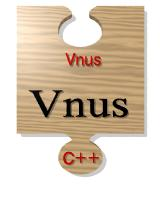

vnus-reference.ps, PostScript (366K)
vnus-reference.ps, PostScript (366K)
| Timber | Implementation | Spar | Vnus | Rotan |

Vnus is an intermediate language that is used in the Timber compiler environment. Version 1 was originally designed as intermediate language for the Booster programming language, but version 2 has been modified to support Spar.
For version 1 of the language a denotational semantics has been developed.
For version 2 a translator is available that generates C with a few C++ constructs (mainly exceptions).
Many of the transformations and optimizations of the compiler are implemented as transformations on Vnus.
The Vnus reference manual has not been formally published, but it is available for download:
vnus-reference.ps, PostScript (366K)
Further publications related to Vnus are listed in the PDS publication database.
The Vnus to C++ converter can be downloaded as part of the timber compiler distribution.
Last modified Mon Mar 5 15:18:16 2001 UT by Kees van Reeuwijk.